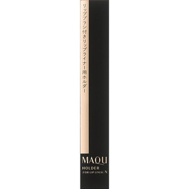
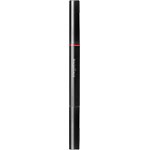

返回列表
产品名称：マキアージュリップライナー用ホルダーN

資生堂 マキアージュリップライナー用ホルダーN －
メーカー 資生堂
JANコード 4901872310739
商品の特徴
ホルダー付属のリップブラシをはずして、両端にリップライナー（カートリッジ）をセットすることもできます。
成分・分量
【分量】
外装サイズ 幅１０ｍｍ×高さ１３８ｍｍ×奥行き１０ｍｍ
用法及び用量
【使用方法】
・リップブラシをご使用後は、ブラシについた口紅をティッシュペーパーで拭きとって、いつも清潔にしてお使いください。